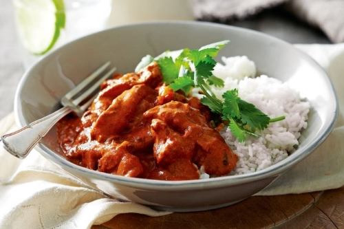

We like it tender!
- Cousine: Indian
- Prep time: 15 minutes
- Cook time: 20 minutes
- Total time: 35 minutes
- Servings: 4
What you'll need:
- 500 g Chicken breast
- 250 ml Double cream
- 2 tbsp Butter
- 1.5 tbsp Tomato paste
- 2 Cloves garlic
- 1/4 Onion Medium
- 1.5 tsp Turmeric powder
- 1 tsp Ground ginger
- 1 tsp Pink Salt
- 3/4 tsp Chili powder
- 1/2 tsp Ground cinnamon
Instructions!
- Dice chicken, mix with turmeric, ginger, salt, chili powder and cinnamon. Set aside.
- Dice onion & garlic, add to skillet and cook with butter for 2-3 mins until fragrant.
- Add chicken and cook for 3-5 mins until sealed.
- Add the cream & tomato paste, mix until smooth.
- Cover with a lid and simmer for 5-7 mins.
- Once the chicken is cooked through it is ready to serve. Or remove the lid and reduce to thicken.
- Serve with rice (Or cauliflower rice to keep carbs down).